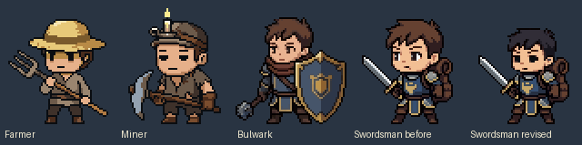

Expansion animation review
Compare the previous game artwork with the LibreSprite revisions. Choose a character, then step through an action at its original timing.
Previous production
Revised

Compare the previous game artwork with the LibreSprite revisions. Choose a character, then step through an action at its original timing.
